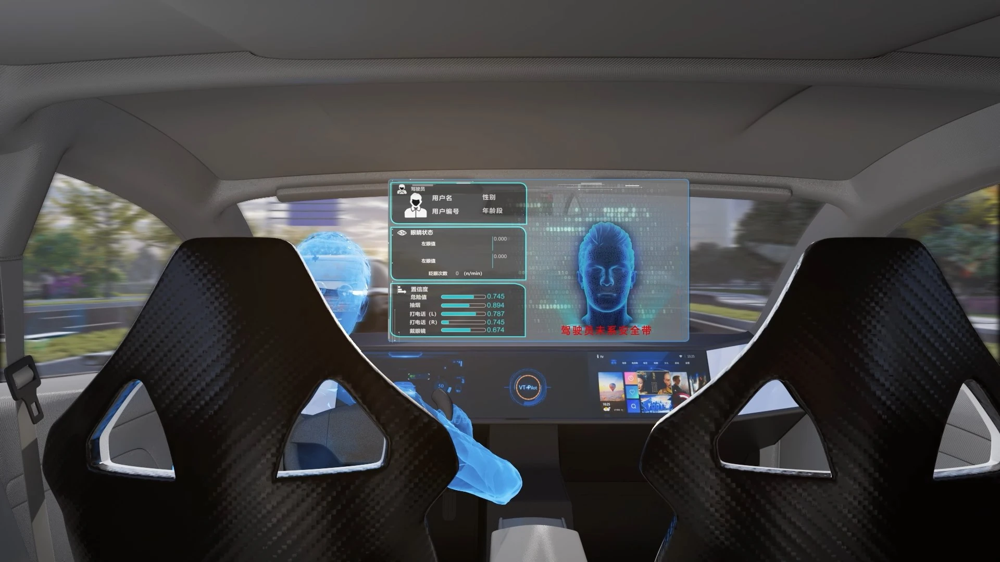

驾驶员监控系统
产品概览
DMS 通过座舱摄像头持续观察驾驶员面部、视线与头部姿态等状态特征，为疲劳、分心及异常驾驶行为提供识别与预警支持。

Capabilities
结合面部、视线和头部姿态等信息评估驾驶员状态。
在检测到风险状态时提供视觉或声音提示，具体策略按项目配置。
通过红外成像增强夜间和复杂光照条件下的状态捕捉能力。
产品详情
VT-DMS 通过座舱摄像头持续观察驾驶员面部、视线、手部与头部姿态，可识别疲劳、分心、抽烟、使用手机、双手离开方向盘及驾驶员不在驾驶位置等状态。
系统可识别摄像头遮挡与红外照明受阻等影响监测完整性的情况，并通过视觉或听觉警报提示驾驶员；在兼容 ADAS 的车辆中，系统还可将驾驶员状态输入传递给整车，以触发受控减速或靠边停车等响应。
综合面部特征、眨眼频率、视线方向、手势与头部动作判断驾驶状态。
针对疲劳、分心及异常驾驶行为发出视觉与听觉警报。
检测摄像头遮挡及红外照明受阻，并结合低照度感知维持监测可靠性。
可在驾驶员未响应警报时向 ADAS 提供状态输入，支持受控减速或靠边停车等整车响应。
产品详情
OMS 与 DMS 同属舱内监控系统（IMS），通过舱内摄像头与视觉算法识别乘员存在、行为和状态，为座舱主动安全与场景化交互提供信息。
系统可围绕安全带状态、儿童与宠物存在、遗留物品、后排乘员及健康状态等方向开展项目化功能配置，并与 DMS、CMS、SL 等座舱产品组合。
识别前后排乘员及儿童、宠物等舱内对象。
支持安全带、车门开启、防夹及遗留物品等提醒。
面向乘员行为、情绪与健康状态开展识别与分级。
可与 DMS、CMS、SL 和座舱域控制器协同工作。
Applications
Regulatory Compliance and Certification
DMS 符合欧盟 Regulation (EU) 2019/2144（GSR 2.0）中 DDAW、ADDW 及网络安全相关系统要求，支持整车欧盟型式认证。
Related Products
产品功能和配置可根据车型与项目需求定制，具体方案以项目评估为准。